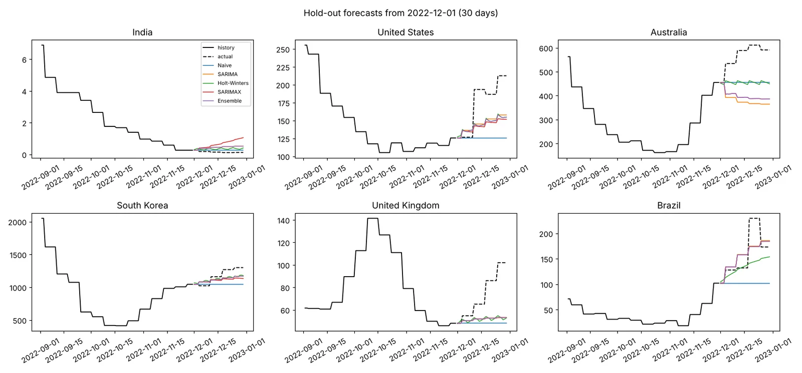
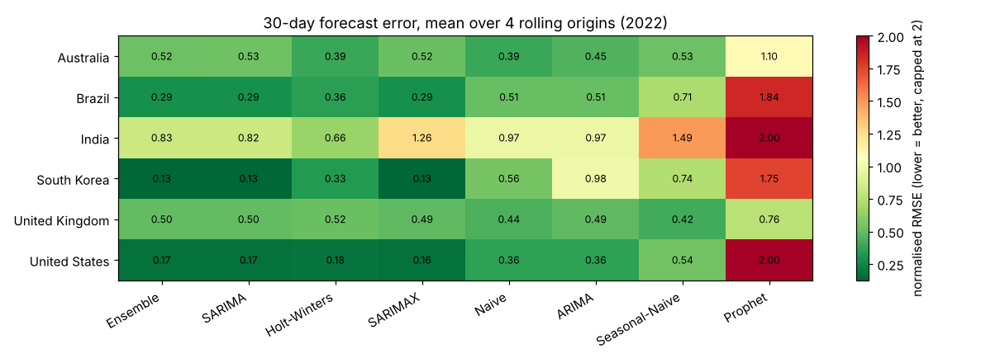

COVID-19 Forecasting
Which classical models can a planner trust for the next 30 days?
Eight forecasting methods compared on daily cases in 6 countries with a leakage-free rolling backtest. The best models cut forecast error by about 25% against a naive baseline, and each forecast becomes a rising, falling or flat call a planner can act on.
From raw counts to a planning call
pipeline + backtest results- 01OWID datacases · stringency · vaccination
- 02Cleanz-score + IQR outliers, then filled
- 03Transformcases per million, log scale
- 04ModelsARIMA · SARIMA · SARIMAX · HW · Prophet
- 05Backtestrolling origins, no look-ahead
- 06Planning callrising · falling · flat + track record
Error cut vs a naive forecast (higher is better)
Normalised RMSE (lower is better)
~/screens
See it working


[01] ~/the-problem
Why it matters
Hospitals and public-health teams need to know how many cases to expect over the next weeks to plan beds, staff and testing. Epidemic curves and policies differed sharply between countries, so a model that fits one may fail another.
Many studies report one model on one country with a random split. This work backtests every model from fixed forecast dates in six countries, uses only data available on each date, and checks whether its intervals are honest.
When the model warns of a rise it is right about 2 times in 3 and misses about 2 rises in 5: useful as an early warning, not as the only input.
[02] ~/how-it-works
How it works
Clean data, honest backtests, and forecasts turned into decisions.
- 01
Gather the data
Our World in Data daily cases for six countries, with the Oxford stringency index and vaccination share as extra signals.
- 02
Clean outliers
Points flagged by both a rolling z-score (|z| > 3) and a rolling IQR rule are treated as missing, then forward- and back-filled.
- 03
Model weekly cycles
Cases per million on a log scale; SARIMA's 7-day seasonal term beats plain ARIMA by about 35% because reporting follows the week.
- 04
Add policy signals
SARIMAX uses stringency and vaccination, but only their last observed values at forecast time, so nothing leaks from the future.
- 05
Backtest fairly
Four 2022 forecast origins per country; each model is refit on the preceding 365 days and scored on the next 30 with MSE, RMSE, MAE, MAPE and nRMSE.
- 06
Make it a decision
Each forecast becomes a rising, falling or flat call, backtested on 276 past calls, with a one-page planning brief per country.
[03] ~/results
Results
Mean over 6 countries × 4 forecast origins, 30-day horizon (lower error is better).
| MODEL | nRMSE | MAPE | VS NAIVE | BEST IN | NOTE |
|---|---|---|---|---|---|
| Ensemble | 0.404 | 36.6% | +25.0% | overall | median of 3 models |
| SARIMA | 0.406 | 36.7% | +24.6% | India, S. Korea | weekly season |
| Holt-Winters | 0.407 | 34.0% | +24.5% | Australia | damped trend |
| SARIMAX | 0.475 | 43.8% | +11.9% | US, Brazil | + policy data |
Prophet overshoots (nRMSE 2.131) because its trend extrapolates the last wave. The ensemble's members were picked after this backtest, so its small lead over SARIMA is slightly optimistic.
HONEST LIMITS
Case counts depend on testing volume: a drop may mean less testing, not less infection.
Daily data with stringency coverage ends in December 2022, when several countries moved to weekly reporting.
WHAT I’D DO NEXT
→ Combine with hospital admissions and test positivity
→ Probabilistic ensembles with calibrated intervals
→ A stricter test with ensemble members fixed in advance
→ Weekly-data versions for 2023 onwards